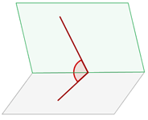
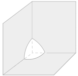

Elementos del espacio
- Poliedros
- Poliedros regulares
- Prismas
- Pirámides
- Cilindro
- Cono
- Esfera
Poliedros
Ángulo diedro
Es la porción de espacio limitada por dos semiplanos que se llaman caras.
Ángulo poliedro
Un ángulo poliedro debe medir menos de 360º.
Poliedro
Es la región del espacio limitada por polígonos.
Elementos de un poliedro:

1Cara: Cada uno de los polígonos que limitan al poliedro.
2Aristas: Los lados de las caras del poliedro. Dos caras tienen una arista en común.
3Vértices: Los vértices de cada una de las caras del poliedro. Tres caras coinciden en un mismo vértice.
4Ángulos diedros: Los ángulos formados por cada dos caras que tienen una arista en común.
5Ángulos poliédricos: Los ángulos formados por tres o más caras del poliedro con un vértice común.
6Diagonales: Segmentos que unen dos vértices no pertenecientes a la misma cara.
Relación de Euler
Poliedros regulares
Tiene todos sus ángulos diedros y todos sus ángulos poliedros iguales y sus caras son polígonos regulares iguales.
Clasificación de poliedros regulares:


Octaedro
Tiene 8 caras que son triángulos equiláteros.
Dodecaedro
Tiene 12 caras que son pentágonos regulares.
Icosaedro
Tiene 20 caras que son triángulos equiláteros.
Prismas
Un prisma es un poliedro que tienen dos caras paralelas e iguales llamadas bases y sus caras laterales son paralelogramos.
Tipos de prismas:
1 Prismas regulares

Son los prismas cuyas bases son polígonos regulares.
2 Prismas irregulares

Son los prismas cuyas bases son polígonos irregulares.
3 Prismas rectos
Son los prismas cuyas caras laterales son rectángulos o cuadrados.
4 Prismas oblícuos
Son los prismas cuyas caras laterales son romboides o rombos.
5 Paralelepípedos

Los paralelepípedos son los prismas cuyas bases son paralelogramos.
6 Octoedros

Los ortoedros son paralelepípedos que tienen todas sus caras rectangulares.
Pirámides
Poliedros cuya base es un polígono cualquiera y cuyas caras laterales son triángulos con un vértice común, que es el vértice de la pirámide.
Clasificación de las pirámides
1 Pirámide regular
Es aquella que tiene de base un polígono regular y sus caras laterales iguales.
2 Pirámide irregular
Es aquella que tiene de base un polígono irregular.
3 Pirámide convexa

Es aquella cuya base es un polígono convexo.
4 Pirámide cóncava

Es aquella cuya base es un polígono cóncavo.
5 Pirámide recta
Es aquella en la que todas sus caras laterales son triángulos isósceles y la altura cae al punto medio de la base.
6 Pirámide oblicua

Es aquella en la que alguna de sus caras laterales no es un triángulo isósceles.
Tronco de pirámide
Es el cuerpo geométrico que resulta al cortar una pirámide por un plano paralelo a la base y separar la parte que contiene al vértice.
Cilindro
Es el cuerpo engendrado por un rectángulo que gira alrededor de uno de sus lados.
Elementos de un cilindro:
Eje: Es El lado fijo alrededor del cual gira el rectángulo.
Generatriz: Es el lado opuesto al eje, y es el lado que engendra el cilindro.
Bases: Son los círculos que engendran los lados perpendiculares al eje.
Altura: Es la distancia entre las dos bases, esta distancia es igual a la generatriz.
Cono
Es el cuerpo de revolución obtenido al hacer girar un triángulo rectángulo alrededor de uno de sus catetos.
Elementos de un cono:
Eje: Es el cateto fijo alrededor del cual gira el triángulo.
Bases: Es el círculo que forma el otro cateto.
Generatriz: Es la hipotenusa del triángulo rectángulo.
Altura: Es la distancia del vértice a la base.
Definición de Tronco de cono
Es el cuerpo geométrico que resulta al cortar un cono por un plano paralelo a la base y separar la parte que contiene al vértice.
Esfera
Es la región del espacio que se encuentra en el interior de una superficie esférica.
Elementos de una esfera:
Centro: Punto interior que equidista de cualquier punto de la esfera.
Radio: Distancia del centro a un punto de la esfera.
Cuerda: Segmento que une dos puntos de la superficie.
Diámetro: Cuerda que pasa por el centro.
Polos: Son los puntos del eje de giro que quedan sobre la superficie esférica.
Circunferencias en una esfera
Paralelos: Circunferencias obtenidas al cortar la superficie esférica con planos perpendiculares al eje de revolución.
Ecuador: Circunferencia obtenida al cortar la superficie esférica con el plano perpendicular al eje de revolución que contiene al centro de la esfera.
Meridiano: Circunferencias obtenidas al cortar la superficie esférica con planos que contienen el eje de revolución.
Figuras geométricas en la esfera
Hemisferio

Es cada una de las partes en que queda dividida la superficie esférica por un plano que pasa por el centro de la esfera, llamado plano diametral.
Semiesfera
Parte de una esfera comprendida entre dos planos que se cortan en el diámetro de aquella.
Huso esférico
Parte de la superficie de una esfera comprendida entre dos planos que se cortan en el diámetro de aquella.
Cuña esférica
Parte de de una esfera comprendida entre dos planos que se cortan en el diámetro de aquella.

Zona esférica
Es la parte de la esfera comprendida entre dos planos secantes paralelos.